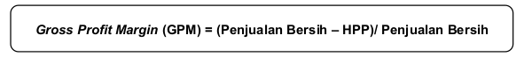
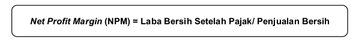
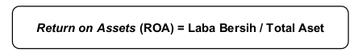
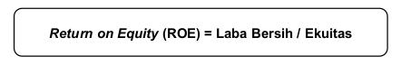
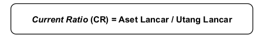
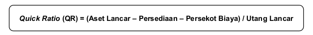

Analisis laporan keuangan dapat dilakukan dengancara menghitung rasio keuangan. UMKM membutuhkan analisis rasio profitabilitas dan rasio likuiditas. Berikut ini merupakan penjelasan tentang dua analisis rasio tersebut.
RASIO PROFITABILITAS
Besar kecilnya laba sebuah perusahaan digunakan banyak orang untuk menilai baik buruknya perusahaan. Laba yang lebih besar dipandang lebih baik daripada laba yang lebih kecil. Namun, benarkah demikian? Apakah perusahaan yang memperoleh laba dalam jumlah nominal besar, misal Rp1.000.000.000 perusahaan yang baik? Atau sebaliknya perusahaan yang hanya memperoleh laba sebesar Rp50.000.000 merupakan perusahaan yang buruk? Jawabannya: belum tentu. Salah satu upaya yang dapat digunakan untuk lebih memastikan penilain terhadap kinerja perusahaan khususnya dalam menghasilkan laba adalah dengan menghitung rasio profitabilitas. Rasio profitabilitas digunakan untuk mengukur kemampuan perusahaan menghasilkan laba pada suatu perioda tertentu. Berdasarkan analisis rasio profitabilitas, perusahaan dapat menilai kinerja dalam menghasilkan laba, membandingkan laba setiap tahun, mengetahui perkembangan perusahaan, maupun mengetahui produktivitas dana yang digunakan oleh perusahaan.
Macam-macam rasio profitabilitas yang dapat digunakan untuk menganalisis kemampuan perusahaan dalam menghasilkan laba ada banyak. Namun, untuk perusahaan skala kecil paling tidak beberapa rasio yang harus dihitung dan dianalisis adalah Gross Profit Margin (GPM) atau margin keuntungan/laba kotor, Nett Profit Margin (NPM) atau margin keuntungan/laba bersih, Return on Assets (ROA) atau Return on Investment atau pengembalian atas aset yang digunakan untuk operasional perusahaan yang bertujuan untuk menghasilkan laba, dan Return on Equity (ROE) atau pengembalian atas ekuitas (modal investor). Perhatikan contoh berikut!
Berikut ini adalah laporan laba rugi dan neraca milik UMKM INDAH ALAMI pada perioda 2014.
Gross Profit Margin (GPM)
Rasio ini digunakan untuk mengukur efisiensi pengendalian harga pokok produksi atau biaya produksi. Besarnya harga pokok produksi atau harga pokok penjualan dipengaruhi oleh biaya-biaya terkait seperti biaya bahan baku, biaya tenaga kerja, biaya angkut pembelian, dll. Terkadang, terjadi ketidakefisienan dalam perusahaan dalam melakukan kegiatan produksi. Sebagai contoh, biaya angkut pembelian sebesar Rp3.000.000 dapat digunakan untuk mengangkut 5 ton barang dagangan atau bahan baku, namun perusahaan hanya mengangkut 1 ton. Contoh lain adalah pekerjaan yang dapat dilakukan oleh 2 orang namun perusahaan membayar pekerjaan tersebut dengan membayar 5 orang. Hal ini tentunya menimbulkan ketidakefisienan. Apakah Anda dapat memastikan bahwa perusahaan Anda efisien dalam penggunaan biaya-biaya dalam usaha memperoleh laba? Anda dapat menganalisis hal tersebut dengan analisis margin keuntungan kotor. Rasio ini menggambarkan kemampuan perusahaan melaksanakan kegiatan produksi secara efisien. Rasio ini merupakan persentase laba kotor dibandingkan dengan penjualan bersih. Rumus yang digunakan untuk menghitung GPM adalah sebagai berikut:
Semakin tinggi gross profit margin (margin laba kotor) menunjukkan bahwa harga pokok lebih rendah jika dibandingkan dengan penjualan sehingga dapat dikatakan kegiatan produksi semakin efisien. Begitu juga sebaliknya, semakin rendah gross profit margin maka kegiatan produksi kurang efisien. Berdasarkan peraga 8.1, margin laba kotor yaitu sebesar: (Rp244.000.000 – Rp145.000.000)/Rp244.000.000 = 0,41 atau 41%.
Angka 41% berarti bahwa dari total penjualan bersih yang didapatkan, sebesar 59% digunakan hanya untuk menutup Harga Pokok Penjualan sehingga yang tersisa hanya sebesar 41% yang digunakan untuk menutup biaya operasional dan biaya lain. Jika biaya-biaya tersebut tidak melebihi 41% maka perusahaan masih mendapatkan laba. Namun, jika biaya-biaya tersebut lebih besar dari 41% maka perusahaan tidak mendapatkan laba sehingga perlu adanya penelusuran tentang adanya kemungkinan terdapat ketidakefisienan dalam hal biaya-biaya khususnya biaya yang berhubungan dengan Harga Pokok Penjualan.
Berdasarkan angka 41%, Anda dapat menganalisis kinerja perusahaan. Cara yang dapat dilakukan adalah dengan membandingkan dengan perusahaan sejenis atau dibandingkan dengan perioda-perioda sebelumnya. Sebagai contoh apabila rata-rata margin laba kotor untuk perusahaan sejenis sebesar 30% maka perusahaan dapat dikatakan efisien karena lebih besar dari rata-rata, namun sebaliknya jika rata-rata margin laba kotor untuk perusahaan sejenis sebesar 60% maka perusahaan dapat dikatakan tidak efisien. Di sisi lain, apabila pada perioda sebelumnya besarnya margin laba kotor lebih kecil (misal 35%) maka perusahaan mengalami peningkatan, sebalinya jika pada perioda sebelumnya besarnya margin laba kotor lebih besar (misal 47%) maka perusahaan mengalami penurunan.
Net Profit Margin (NPM)
Pemilik usaha atau investor pada suatu perusahaan memiliki keinginan bahwa apa yang mereka investasikan akan menghasilkan keuntungan bagi mereka. Dengan kata lain, pemilik atau investor selalu berharap adanya bagi hasil dari perusahaan yang tentunya tidak melupakan pengembangan perusahaan. Laba yang dibagi kepada pemilik atau investor dan laba yang ditahan untuk pengembangan usaha didasarkan pada laba bersih, tidak sebatas penjualan dikurangi HPP. Net Profit Margin (NPM) merupakan rasio yang menunjukkan kemampuan perusahaan untuk memberi “sisa” laba bersih bagi pemilik atau investor. Berbeda dengan GPM, NPM digunakan untuk membandingkan laba bersih setelah pajak dengan penjualan bersih. Laba bersih merupakan laba kotor yang ditambah dengan pendapatan lain (jika ada) dan dikurangi dengan biaya-biaya operasional (biaya selain HPP). Hubungan antara laba bersih sesudah pajak dan penjualan bersih menunjukkan kemampuan manajemen dalam mengelola perusahaan sehingga dapat menyisakan margin atau dengan kata lain “sisa” dari laba bersih sebagai imbalan bagi pemilik atau investor. Berdasarkan rasio ini perusahaan dapat mengetahui persentase laba bersih yang tersisa dari total penjualan yang didapatkan perusahaan. Rumus yang digunakan untuk menghitung NPM adalah sebagai berikut:
Semakin tinggi nett profit margin (margin laba bersih) menunjukkan bahwa kegiatan operasional perusahaan dalam menghasilkan laba semakin baik. Sebaliknya, semakin rendah margin laba bersih semakin rendah pula kinerja perusahaan dalam menghasilkan laba. Berdasarkan peraga 8.1, margin laba bersih yaitu sebesar: Rp54.500.000/Rp244.000.000 = 0,22 atau 22%.
Angka 22% berarti bahwa dari total penjualan bersih yang didapatkan, sebesar 78% digunakan untuk menutup semua biaya seperti Harga Pokok Penjualan, Biaya Operasional (Gaji, Sewa, Pemasaran, dll), dan termasuk pajak yang dibayarkan. Sisa sebesar 22% merupakan laba bersih yang didapatkan oleh perusahaan. Sama halnya dengan analisis pada margin laba kotor, angka 22% ini harus dibandingkan dengan rata-rata perusahaan sejenis untuk mengetahui baik buruknya kinerja perusahaan atau dibandingkan dengan perioda sebelumnya untuk mengetahui peningkatan atau penurunan kinerja perusahaan.
Return on Assets (ROA)
Rasio ini digunakan untuk mengukur keefektifan penggunaan aset milik perusahaan yang dikelola manajemen untuk menghasilkan laba bagi perusahaan. Rasio ini dapat menggambarkan kemampuan jajaran manajerial dalam mengelola semua aset perusahaan sehingga kita dapat mengetahui kinerja manajemen. Kinerja ini dapat diukur dengan membandingkan laba bersih yang didapatkan oleh perusahaan dengan total aset yang dimiliki perusahaan pada perioda tertentu. Rumus yang digunakan untuk menghitung ROA adalah sebagai berikut:
Semakin tinggi ROA menunjukkan bahwa kinerja perusahaan semakin baik khususnya keefektifan dalam pengelolaan aset perusahaan untuk menghasilkan laba bagi perusahaan. Sebaliknya, semakin rendah ROA kinerja perusahaan dalam pengelolaan aset untuk menghasilkan laba semakin tidak efektif. Berdasarkan peraga 8.1 dan 8.2, ROA yaitu sebesar: Rp54.500.000/ Rp370.000.000 = 0,15 atau 15%.
Angka 15% berarti bahwa perusahaan mampu menghasilkan laba sebesar 15% dari total aset yang digunakan untuk menghasilkan laba tersebut. Sama halnya dengan analisis pada margin laba kotor dan margin laba bersih, angka 15% ini harus dibandingkan dengan rata-rata perusahaan sejenis untuk mengetahui baik buruknya kinerja perusahaan dalam hal pengelolaan aset perusahaan untuk menghasilkan laba atau dibandingkan dengan perioda sebelumnya untuk mengetahui peningkatan atau penurunan kinerja perusahaan.
Return on Equity (ROE)
Rasio ini digunakan untuk mengukur kemampuan perusahaan untuk dapat memberikan hasil usaha bagi setiap investasi dalam bentuk ekuitas yang ditanamkan pemilik di sebuah perusahaan. Dengan kata lain, rasio ini menunjukkan keefektifan perusahaan mengelola modal sendiri (pemilik) untuk menghasilkan laba. Berdasarkan rasio ini pemilik perusahaan dapat mengetahui seberapa besar perusahaan memberikan imbal hasil per satu mata uang yang diinvestasikan pemilik ke perusahaan. Rumus yang digunakan untuk menghitung ROE adalah sebagai berikut:
Semakin tinggi ROE menunjukkan bahwa pengelolaan modal perusahaan semakin efektif sehingga pemilik akan mendapatkan imbal hasil yang tinggi. Sebaliknya, semakin rendah ROE menunjukkan kinerja perusahaan dalam pengelolaan modal semakin tidak efektif. Berdasarkan peraga 8.1 dan 8.2, ROE yaitu sebesar: Rp54.500.000/Rp180.000.000 = 0,30 atau 30%.
Angka 30% berarti bahwa perusahaan mampu memberikan imbal hasil usaha untuk setiap Rp 1 yang diinvestasikan di perusahaan, pemilik mendapatkan tambahan nilai ekuitas Rp0,30. Dengan kata lain, dari total investasi yang dilakukan di perusahaan, pemilik atau investor mendapatkan kenaikan nilai ekuitas sebesar 30%. Tingkat imbal hasil usaha sebesar 30% cukup menarik bagi pemilik atau calon investor terutama jika hanya dibandingkan dengan suku bunga deposito. Namun, bagi Anda sebagai calon investor, selain melihat suku bunga investasi lain, Anda harus melihat tingkat atau rata-rata ROE pada perusahaan lain yang sejenis sebelum mengambil keputusan untuk investasi.
RASIO LIKUIDITAS
Apakah perusahaan yang baik adalah perusahaan yang tidak punya utang? Apakah perusahaan yakin mampu melunasi utang yang ada? Beberapa pertanyaan tersebut mungkin ada di dalam benak Anda ketika memikirkan utang bagi perusahaan. Tidak selalu perusahaan yang tidak memiliki utang merupakan perusahaan yang baik atau sehat. Begitu pula, perusahaan yang memiliki laba yang tinggi belum tentu merupakan perusahaan yang baik. Apakah perusahaan dengan utang yang banyak merupakan perusahaan yang tidak sehat? Belum tentu. Salah satu indikator yang dapat Anda gunakan adalah kemampuan perusahaan membayar utang tersebut. Rasio likuiditas digunakan untuk mengukur kemampuan perusahaan membayar kewajiban atau utang, secara khusus utang jangka pendek. Berdasarkan rasio likuiditas, Anda dapat mengetahui kemampuan perusahaan melunasi semua utang, baik saat jatuh tempo atau saat ditagih oleh kreditor (pemberi pinjaman). Analisis ini bermanfaat bagi perusahaan untuk pengambilan keputusan kredit atau sebaliknya bagi kreditor, analisis ini bermanfaat untuk mengambil keputusan apakah ia akan memberikan pinjaman kepada perusahaan atau tidak karena mereka dapat memperoleh informasi kemampuan bayar dari perusahaan tersebut.
Macam-macam rasio likuiditas yang dapat digunakan untuk menganalisis kemampuan perusahaan membayar utang jangka pendek adalah Current Ratio (CR) dan Quick Ratio (QR). Perhatikan contoh berikut!
Berikut ini adalah neraca milik UMKM INDAH ALAMI pada perioda 2014.
Current Ratio (CR)
Perusahaan biasanya memiliki dua atau tiga jenis aset, yaitu aset lancar, aset tidak lancar (tetap) berwujud dan aset tetap tidak berwujud serta aset lain. Rasio ini digunakan untuk mengukur kemampuan perusahaan dalam membayar utang jangka pendeknya dengan menggunakan aset lancar yang dimiliki oleh perusahaan. Dengan kata lain, rasio ini membandingkan antara jumlah aset lancar dan utang lancar yang dimiliki oleh perusahaan. Rumus yang digunakan untuk menghitung CR adalah sebagai berikut:
Tidak ada angka pasti untuk menentukan ideal tidaknya CR. Secara umum CR ideal berkisar 2-3 atau 200%-300%. Semakin ideal CR menunjukkan bahwa perusahaan memiliki kemampuan untuk membayar semua utang jangka pendeknya atau dapat dikatakan perusahaan dalam keadaan sehat. Sebaliknya, semakin tidak ideal CR (kurang dari 1 atau 100%) berarti bahwa perusahaan dalam kondisi tidak sehat dikarenakan kesulitan untuk membayar utang mereka dengan aset yang dimiliki. Berdasarkan peraga 8.3, CR yaitu sebesar: Rp260.000.000/Rp100.000.000 = 2,6 atau 260%.
Angka 2,60 berarti bahwa setiap Rp1 utang lancar dapat dijamin oleh Rp2,60 aset lancar. Jika perusahaan punya utang lancar sebesar Rp10.000 perusahaan memiliki jaminan atas utang tersebut sebesar Rp26.000. Hal ini menunjukkan bahwa perusahaan memiliki kemampuan untuk melunasi semua utang jangka pendeknya. Aset lancar yang dimiliki oleh perusahaan cukup besar. Hasil penjualan semua aset lancar dapat menutup sampai dengan 260% dari total utang lancarnya. Perusahaan dengan CR antara 2-3 atau 200%-300% dapat dikatakan perusahaan tersebut dalam kondisi sehat. Namun, secara umum baik tidaknya CR dinilai berdasarkan penilaian manajemen dan target dari perusahaan.
Quick Ratio (QR)
Banyak jenis aset lancar yang dimiliki oleh perusahaan, seperti kas, piutang, atau persediaan. Tidak semua aset lancar dapat segera diuangkan atau tidak dapat diubah menjadi kas dengan cepat. Pada saat utang jatuh tempo atau ditagih, perusahaan membutuhkan kas segera untuk membayar atau melunasi utang tersebut. Quick Ratio (QR) merupakan rasio yang digunakan untuk mengukur kemampuan perusahaan dalam membayar atau melunasi utang jangka pendeknya dengan menggunakan aset yang lebih likuid atau lebih cepat untuk diuangkan. Berbeda dengan Current Ratio, rasio ini mengeluarkan akun persediaan untuk penghitungan aset lancar. Persediaan merupakan aset lancar yang belum tentu semua dapat terjual. Hal ini sangat tergantung pada kondisi persediaan yang ada di perusahaan. Sebagai contoh, pada daftar saldo diketahui saldo persediaan sebesar Rp10.000.000 namun setelah cek fisik, persediaan senilai Rp4.000.000 yang ada di gudang tidak layak untuk dijual karena sudah usang. Selain itu, biaya dibayar di muka (persekot biaya) juga dikeluarkan. Biaya yang telah dibayarkan di muka atau biasa disebut dengan DP, sulit untuk ditarik kembali dalam jangka waktu singkat atau bahkan tidak dapat ditarik kembali. Dengan demikian, persediaan dan biaya dibayar di muka sebaiknya tidak digunakan untuk menghitung rasio ini. Rumus yang digunakan untuk menghitung QR adalah sebagai berikut:
Sama halnya dengan CR, tidak ada angka pasti untuk menentukan ideal tidaknya QR. Secara umum QR ideal berkisar 1,5-2 atau 150%-200%. Semakin ideal QR menunjukkan bahwa perusahaan memiliki kemampuan untuk membayar semua utang jangka pendeknya dengan semua aset lancarnya setelah dikurangi persediaan atau dapat dikatakan perusahaan dalam keadaan sehat. Sebaliknya, semakin tidak ideal CR (kurang dari 1 atau 100%) berarti bahwa perusahaan dalam kondisi tidak sehat atau tidak likuid dikarenakan kesulitan untuk membayar utang mereka dengan aset lancar yang dimiliki. Berdasarkan peraga 8.3, QR yaitu sebesar: (Rp260.000.000-Rp120.000.000-Rp10.000.000)/Rp100.000.000 = 1,30 atau 130%.
Angka 1,30 berarti bahwa setiap Rp1 utang lancar dapat dijamin oleh Rp1,30 aset lancar yang telah dikurangi persediaan dan persekot biaya. Jika perusahaan punya utang lancar sebesar Rp10.000 perusahaan memiliki jaminan atas utang tersebut sebesar Rp13.000. Hal ini menunjukkan bahwa perusahaan memiliki kemampuan untuk melunasi semua utang jangka pendeknya. Hasil penjualan semua aset lancar kecuali persediaan dan persekot biaya dapat menutup sampai dengan 130% dari total utang lancarnya. Perusahaan dengan QR antara 1,5-2 atau 150%-200% dapat dikatakan perusahaan tersebut dalam kondisi sehat.